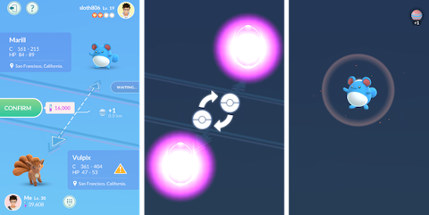
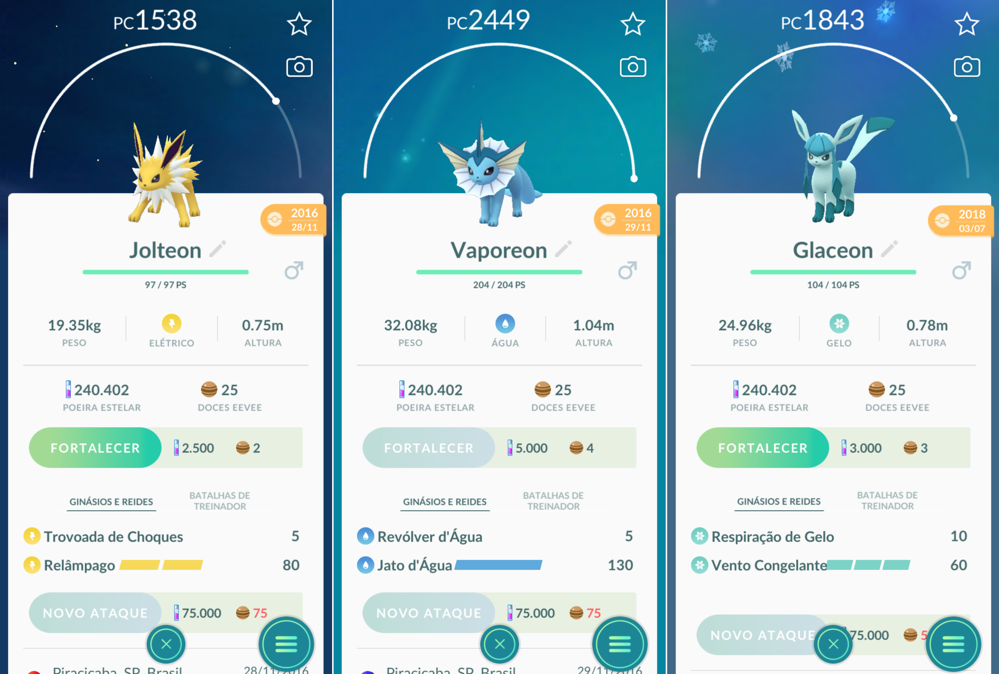
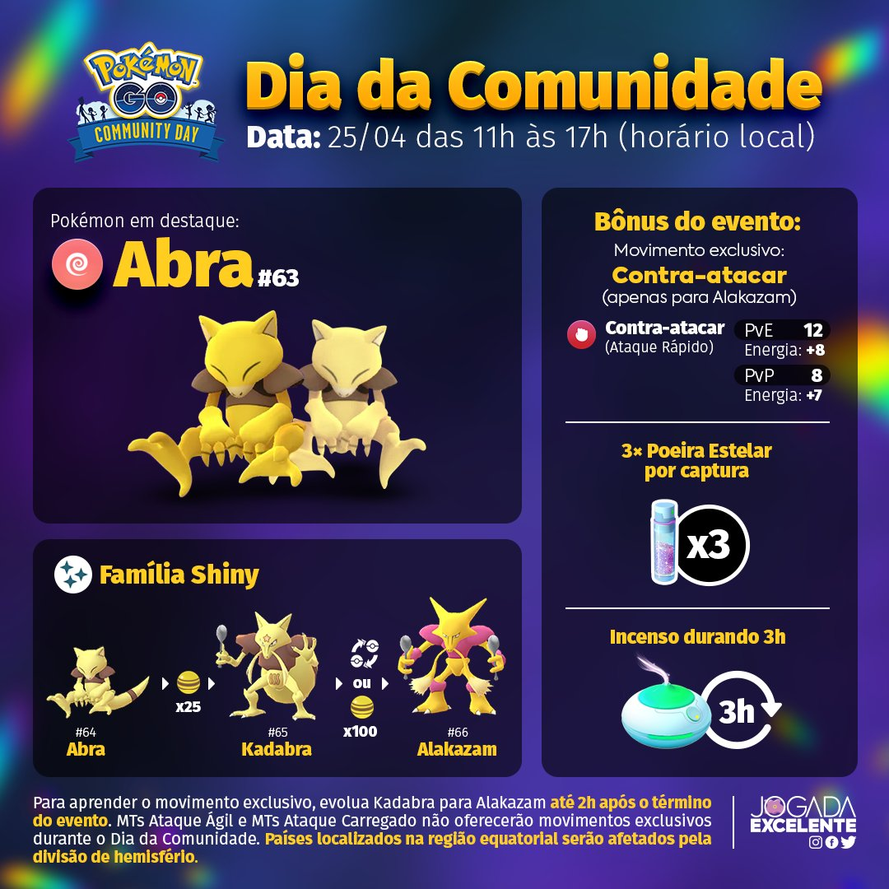

PokeInfo

Ao jogar Pokémon GO, o usuário interage com um mapa baseado no mundo real (inicialmente o Google Maps e atualmente o OpenStreetMap). O jogador se localiza e procura Pokémon por meio desse mapa. À medida que ele se desloca, o aplicativo vibra para avisar sobre a presença das criaturas virtuais pelo caminho. Ao tocar a tela do smartphone é possível visualizar o Pokemón no mesmo local onde o jogador está, pois o jogo sobrepõe à visualização da câmera a imagem do Pokémon e simular que ele está no local onde o jogador está, de forma semelhante à realidade virtual. Para capturar o monstrinho, basta arremessar uma Pokébola. Daí em diante, além de tentar pegar todos os tipos diferentes Pokémon, ao atingir o nível 5 do jogo é possível dominar os diversos ginásios espalhados pela cidade. Além dos Ginásios Pokémon, existem pontos específicos nos quais é possível coletar itens e Pokébolas (as chamadas Poképaradas). Esses locais geralmente são pontos muito conhecidos da cidade (museus, monumentos, entre outros).
Pokémon GO só permite realizar uma troca especial por dia. Trocas especiais envolvem Pokémon que o outro usuário não possui, ou Pokémon lendários e brilhantes. Porém, para trocar mais de uma vez, basta ir nas configurações do seu celular, mudar a data para o dia seguinte e retornar ao Pokémon GO. Não se esqueça de normalizar as configurações em seguida.
O Eevee é um Pokémon que evolui para formas diferentes em Pokémon GO. A evolução costuma ser aleatória, mas você pode escolher quando ela ocorre pela primeira vez, basta renomear seu Eeeve. Para Vaporeon, o Eeevee deve ter o nome de Rainer; para Flareon, Pyro; para Umbreon, Tamao; para Jolteon, Sparky; e para Espeon, Sakura.
É uma dica que pode render um pouco mais de experiência, mas vale a pena. Quando capturar um Pokémon, jogue sempre bolas curvas. Para isso, gire a Pokébola antes de lançar, assim ela será lançada com efeito curvo. Sempre que a bola acertar o Pokémon desta forma, o jogador ganhará um pouco mais de experiência na captura – o que fará toda a diferença na hora de subir de nível em sua conta.

Dias Comunitários são eventos mensais promovidos pela Niantic, a produtora do game. Eles permitem que determinado Pokémon, escolhido pelo estúdio, apareça com mais frequência no mapa. Nestes dias, a chance de conseguir um Pokémon brilhante, com cor diferenciada, também aumenta consideravelmente. Lembrando que Pokémon brilhantes são raríssimos, talvez os mais raros do jogo.
